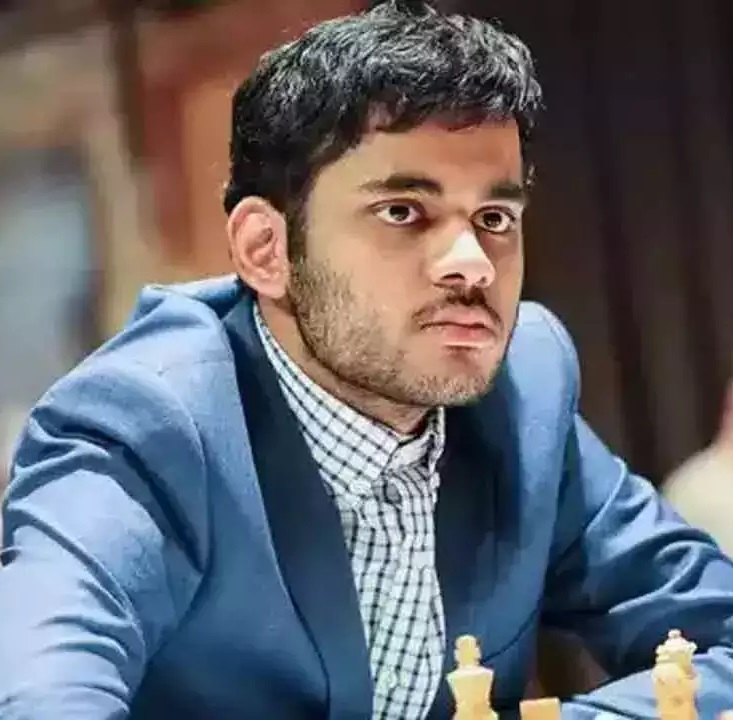

Chess is a two-player game where you try to kill the other side's king. It is a very strategic game, unlike checkers, consisting of trades, blunders, checks, and checkmates.
First of all, trades are whenever one side captures a piece, losing their own piece in the process. This can happen with any piece (scroll down to learn more about pieces).
Also, chess has blunders. A blunder is whenever you lose a piece and you cannot take it back. This is a very bad thing and you should avoid this.
Next up, chess has checks. Checks are whenever your king is being threatened. You avoid this by moving your king, capturing the piece, and blocking the path of the piece.
Now, I will talk about Checkmate. A checkmate is whenever you check the opponent's king and they cannot move anywhere else, and you win. However, if the opponent's king is not checked, their king cannot move, and they can't move anything else, then it is a stalemate or a draw. Other ways of getting a draw is if both players agree to it.
Use the following links if you are interested and want to know more.
-
Name: Magnus Carlsen
World Chess Rank: #1
Chess Rating: 2832
-

Name: Hikaru Nakamura
World Chess Rank: #2
Chess Rating: 2802
-
Name: Fabiano Caruana
World Chess Rank: #3
Chess Rating: 2796
-

Name: Arjun Erigaisi
World Chess Rank: #4
Chess Rating: 2775
Pieces
- Pawn
- Rook
- Knight
- Bishop
- Queen
- King

Brillant Queen Sacrifice